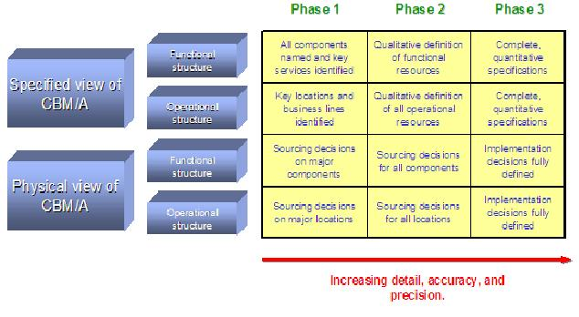

The CBM/A is a working document that is extended, refined, and sometimes restructured in parallel with other
architecture products as the project proceeds.
Unless specific circumstances dictate otherwise, it is recommend that both the specified and physical views of the
CBM/A’s functional and operational structures develop in parallel, with component descriptions and
relationship/interaction diagrams developing in tandem – for example, in a forward engineering project:

Figure 1
The standard approaches for CBM/A development are taught in the Enterprise Architecture Consulting method class
referenced in Section 8. These techniques together with an iterative approach can help ensure the CBM/A is well formed,
often involving design trade-offs and compromise focused on achieving a balanced set of components that exhibit “high
cohesion” and “loose coupling”.
These techniques focus on the development of the model’s various views, and as such describe steps which can be
repeatedly applied project phase by project phase, moving all aspects of the model towards increased levels of
consistency, detail and completeness (i.e. ensuring a consistent set of views of the model within any column of figure
1).
Whether the CBM/A is intended to be a generalized pattern, or will be specific to a particular enterprise, it is highly
desirable that its development is based on previously developed similar models, known to work in similar circumstances.
In the case of a client specific CBM/A, every effort should be made to start with (or compare the results against) an
established industry model, whether it is at the level of CBM/A (preferred) or CBM/S (still useful).
In any event, the systematic development of a CBM/A’s functional and operational structure generally focuses on one or
more of several separate considerations, each (where appropriate/possible) taking information from other work products
(showing the dependencies of the CBM/A):
-
A top-down analytical approach, in which the overall shape and structure of the model is directly guided by
the business goals and value propositions of the enterprise.
If available, this may be guided by an appropriate CBM/S map[1] - remembering that the set of components
appearing on any input CBM/S view should be directly related to those in the CBM/A, although the proximity of
components on the map does not, intentionally indicate component-component relationships. However, as the CBM/A
unfolds, there is likely to be re-factoring of the initial component set, and therefore the resultant CBM/A map
could differ from that originally used.
Alternatively, this approach may exploit the presumption that the underlying “as is” structure and organization of
an enterprise is stable over the long term, with variation in implementation and focus being the prime variations
for the “to be” model[2]. In these circumstances, it may be appropriate to analyze the “as is” enterprise, reverse
engineering from the organizational structure, job descriptions and activities of individuals, to discover the
underlying specification of functional components. This approach requires careful interview and assessment - for
example, experience shows it necessary to clarify whether a function is done within a team (and therefore included
in the component), or is requested from another team (and therefore involving a service from another
component.
-
A resource oriented approach, in which the resources needed by the enterprise to satisfy its strategic goals
are first identified and described, such as via a Strategic Capability Network (BUS 416, “Capability Model
Definition”), before then being clumped into components using affinity analysis and other similar techniques.
This perspective can be informed by a set of resource specific work products, developed to portray the traditional
views of business architecture, whether
-
-
Functional, using the Business Activity Model (using (BUS 312 “Process Identification”),
Enterprise Information Model (ARC 307), and the Business Roles (from ARC 303, “Business Roles
and Locations”)
-
Operational, using Business Structure (BUS 334) and Business Locations (from ARC 303,
“Business Roles and Locations”)
-
A bottom-up business purpose approach, in which
the functional structure is established, by direct identification and refinement of business components, through
analysis and design of the business’s response to architecturally significant business triggers – whether by the
enterprise’s customers and suppliers, or other causes such as legal or commercial events (via component interaction
diagrams, aggregating up to a component relationship diagram),
the operational implications of these interactions are also considered, as the components are spread out over
operational resources in order to achieve the enterprise’s non functional requirements[3].
This perspective will require information that may be found in the Business Event List (BUS 101), Business
Scenarios and Key Performance Indicators, together with an appreciation of the existing structure and organization
of the enterprise.
It is possible to either
-
-
Begin with an “as is” view of the enterprise, therefore focusing first on the physical and operational
views of the CBM/A before “reverse engineering” towards the specified and functional views - implied by the
way the “as is” supports the functional and nonfunctional requirements of the solution
or
-
First focus on the specification of the CBM/A, detailing the required components’, services’ and resources’
descriptions and interactions top down, before separately deciding on the manner in which they will be
implemented.
Or both.
[1] For example, developed as part of a previous CBM based business strategy or change program prioritization
project, or available as a standard industry map.
[2] For example, the nature and structure of retail banking remains largely unchanged over many years, with the
core business being the debit and credit of checking (aka clearing) accounts – while once these activities were
performed by clerks in ledgers, and are now performed by IT, they are basically the same activities.
[3] Using standard component and operational modeling techniques similar to those used in IT software and system
engineering
|